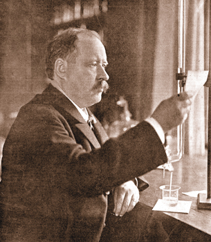

Module 4—Properties of Solutions
 Explore
Explore
 Read
Read
Arrhenius’s Theory of Electrolytes, Acids, and Bases

© 2007 Jupiterimages Corporation
In 1887, while working on his PhD in chemistry, Svante Arrhenius did substantial research on the freezing-point depression of solutions containing electrolytes. This research led to the development of a unique theory to describe the changes that occur to solutes when they dissolve in water.
Read pages 197 through 199 in your textbook to learn about Arrhenius’s theory.
You may also wish to read a summary of Arrhenius’s theory. Understanding this theory requires you to interpret the observable changes to a system in a new way, and to integrate what you have learned about intermolecular bonding from your study in Unit A in this course.
 Self-Check
Self-Check
SC 1. Each of the following substances is placed in water. Determine whether it dissociates, ionizes, or neither. Also, identify whether it will be an acidic, neutral, or basic in solution. The first one is done for you.
Substance |
Dissociates, Ionizes, or Neither |
Acidic, Neutral, or Basic |
KCl |
dissociates | neutral |
HF |
||
CH4 |
||
CH3COOH |
||
C2H5OH |
||
H2SO4 |
||
Ca(OH)2 |
||
MgCl2 |
||
C12H22O11 |
SC 2. How can you tell whether a molecular compound will yield a neutral solution or an acidic solution?
SC 3. State three important theories credited to Arrhenius.
SC 4. State one theoretical property of an acid and one theoretical property of a base.
SC 5. Why does a solution containing an electrolyte conduct electricity, whereas a solution containing a nonelectrolyte does not?
SC 6. What are three similarities and one difference between sodium nitrate and sodium hydroxide in solution?
Self-Check Answers
SC 1.
Substance |
Dissociates, Ionizes, or Neither |
Acidic, Neutral, or Basic |
KCl |
dissociates |
neutral |
HF |
ionizes |
acidic |
CH4 |
neither (molecular) |
neutral |
CH3COOH |
ionizes |
acidic |
C2H5OH |
neither (molecular) |
neutral |
H2SO4 |
ionizes |
acidic |
Ca(OH)2 |
dissociates |
basic |
MgCl2 |
dissociates |
neutral |
C12H22O11 |
neither (molecular) |
neutral |
SC 2. A molecular compound can become an acid, but only if it ionizes in water to yield a hydrogen ion, H+(aq). Most molecular compounds, such as CH4(g), will not yield a hydrogen ion.
In Module 5 you will learn more about compounds that behave as acids or bases and how to use a chemical formula to predict whether a substance will have acidic or basic properties.
You may wish to look at the table “Relative Strengths of Acids and Bases at 298.15 K” in the Chemistry Data Book. Several acids are listed here, so you can check to see whether a particular molecular substance will form an acid. The acids HF, CH3COOH, and H2SO4 listed above in SC 1. are included in the data book.
SC 3. Ionic compounds dissociate into their charged ions upon dissolving, acids ionize to produce H+(aq), and bases dissociate to yield OH−(aq).
SC 4. According to Arrhenius, an acid ionizes to produce H+(aq) in solution and a base dissociates to form OH−(aq).
SC 5. An electrolyte, when dissolved, dissociates into its charged particles. This allows a current to flow. Nonelectrolytes dissolve but do not dissociate, so there are no charged particles in solution. This prevents a current from flowing.
SC 6. Similarities
- They are both electrolytes.
- They both dissociate in water.
- They both contain a negatively charged polyatomic ion.